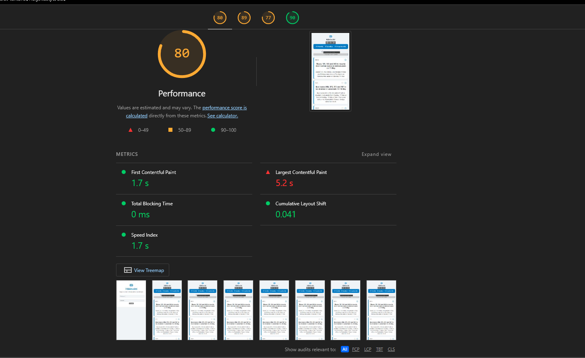
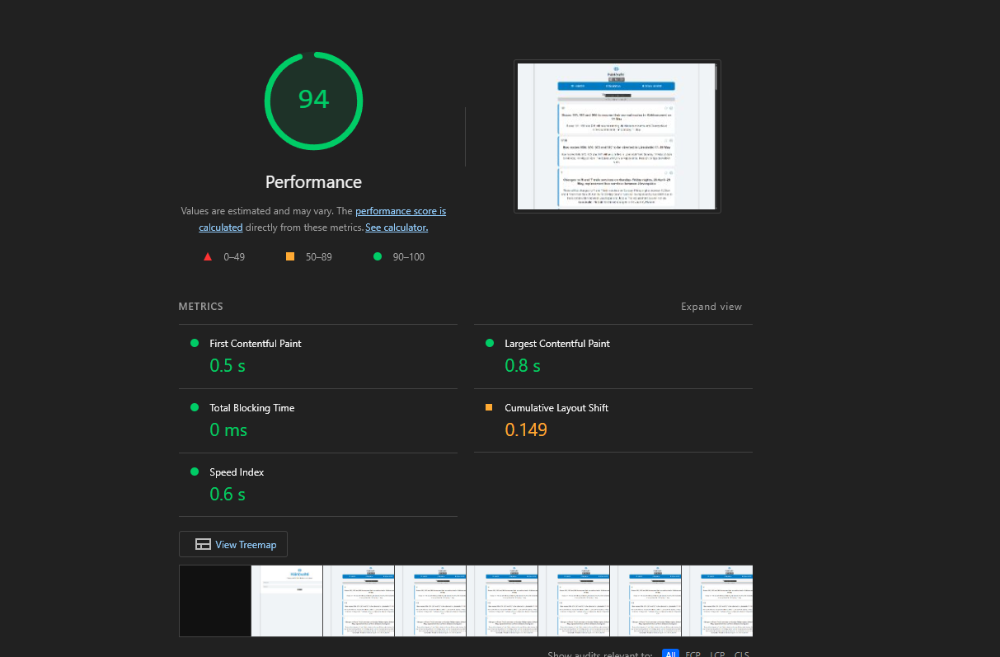

Häiriövahti - Tekninen suorituskyky ja saavutettavuus
Häiriövahti on nykyaikainen, reaaliaikainen verkkosovellus, joka on suunniteltu helpottamaan Helsingin seudun liikenteen (HSL) käyttäjien arkea. Sovelluksen avulla käyttäjät voivat seurata julkisen liikenteen häiriötiedotteita.
Sovellus hakee HSL:n häiriötiedotteet GraphQL-rajapinnasta (Digitransit API).
Käyttäjä voi merkitä liikennelinjoja suosikeiksi (tähtikuvake). Nämä valinnat tallentuvat käyttäjäkohtaisesti Cloud Firestore -tietokantaan.
Sivuston toimivuus on testattu kattavasti eri päätelaitteilla:
Sivusto toimii moitteettomasti, kaikki elementit latautuvat ja asettuvat oikein. Käyttäjäkokemus on sujuva ja intuitiivinen.
Layout mukautuu hyvin vaakasuunnassa, pystysuunnassa elementit asettuvat oikein. Käytettävyys on hyvä sekä vaakatasossa että pystysuunnassa.
Sivusto on täysin responsiivinen ja käytettävä. Elementit asettuvat hyvin näytön koosta riippumatta, ja navigointi on helppoa.
Sivusto on testattu ja todettu toimivaksi seuraavilla selaimilla:
Sivuston latautumisajat on analysoitu Google PageSpeed Insights -työkalulla. Analyysi on suoritettu sovelluksen päänäkymälle, mikä antaa realistisen kuvan suorituskyvystä datan latautuessa.


Sivusto on teknisesti hyvin toteutettu ja responsiivinen kaikilla päätelaitteilla. Vaikka mobiilissa tulee vastaan raportissa pientä ongelmaa, latausajat ovat hyvät eikä aiheuta ongelmia käyttäjälle.
Nämä tulokset viittaavat siihen, että sivusto on suunniteltu huolellisesti ja teknisesti hyvin toteutettu. Sivuston responsiivisuus, nopea latautuminen ja yhteensopivuus uusimpien selaimien kanssa varmistavat sujuvan käyttökokemuksen kaikille käyttäjille.